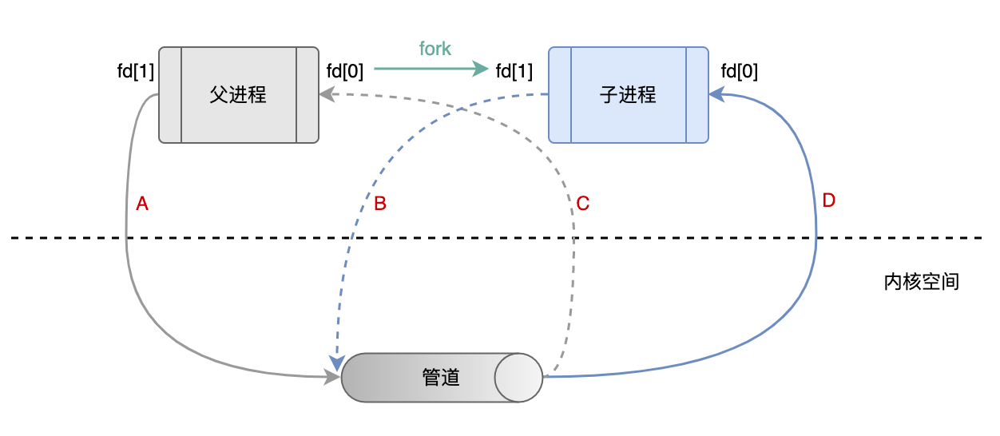
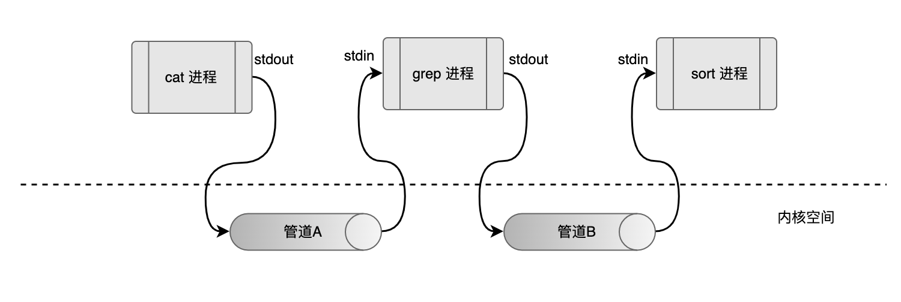
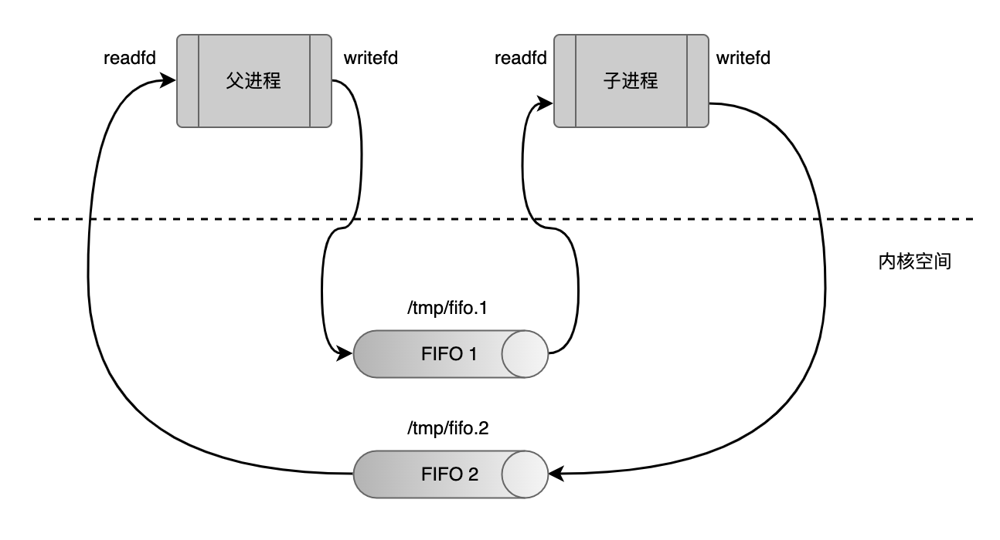

IPC 是进程间通信（InterProcess Communication）的简称，指的是操作系统上的不同进程之间的某种形式的消息传递。管道（Pipe）是早期被广泛使用的一种最简单的 IPC 形式，不过它只能在有亲缘关系的进程之间使用。为了解决这个问题，后来引入了有名管道（Named Pipe），也称为 FIFO。
管道
几乎所有的类 Unix 系统都提供了管道，可以通过 pipe 函数来创建。pipe 函数返回两个文件描述符，fd[0]和 fd[1]。可以通过 fd[0]来读管道中的数据，fd[1]来向管道里面写数据。
|
|
在只有单个进程的情况下，数据从 fd[1]流向管道，再从管道流向 fd[0]。如果一个父进程通过 fork 产生一个子进程，那这个子进程可以拿到父进程管道的一个副本。这时候，数据有 4 个流向（A、B、C、D）。在 fork 之后，父进程关闭自己的 fd[0]，子进程关闭自己的 fd[1]，只留下 A 和 D 两个流向，这就建立了从父进程到子进程的单向数据流。不过，由于管道只提供的单向的数据流，所以如果要在两个进程之间进行双向通信（全双工通信），至少需要创建两个管道。

Linux 系统不少地方都用到了管道的设计思想。比如在终端输入cat data.txt | grep "2022" | sort 对文件的数据筛选、排序，这些命令由三个进程（cat 进程、grep 进程、sort 进程）来完成，cat 进程处理完之后，把输出写入管道 A，grep 进程从管道 A 中读出数据，处理之后写入管道 B，sort 进程读出管道 B 的数据处理之后，通过标准输出打印出来。

FIFO
管道是没有名字的，在不考虑文件描述符传递的情况下，只能在具有亲缘关系的进程之间使用，这是管道最大的局限性。FIFO 是一种改进版本的管道，每个 FIFO 都有一个路径名与之关联，所以只要不同的进程能够访问同一个 FIFO，就能实现彼此之间的通信。FIFO 同样只提供单向数据流，要实现双向通信，至少需要两个 FIFO。FIFO 可以通过 mkfifo 函数创建，其中 pathname 是一个 Unix 路径名，同时也是 FIFO 的名字。
|
|
FIFO 可以重复使用，如果希望打开一个已经创建好的 FIFO，直接调用 open 函数即可。一般来说，在往 FIFO 里面读写数据之前，要通过 mkfifo 检查是否存在，再通过 open 或者 fopen 打开。管道和 FIFO 在内核类似一个队列，write 操作总是会写到它们的末尾，read 操作总是读它们开头的数据，不能对管道或者 FIFO 调用 lseek。

局限性
- 管道和 FIFO 都是只能在单台主机上使用的 IPC 形式。
- 一个进程在任意时刻能打开的最大文件描述符有限，并且操作系统还限制了可以原子性往一个管道或者 FIFO 写入的最大数据量。
- 管道和 FIFO 这种 IPC 面向字节流，数据没有语义的区分，需要应用程序把这些字节流分割为对象。